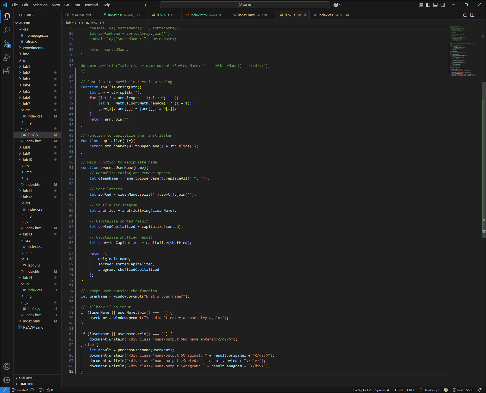
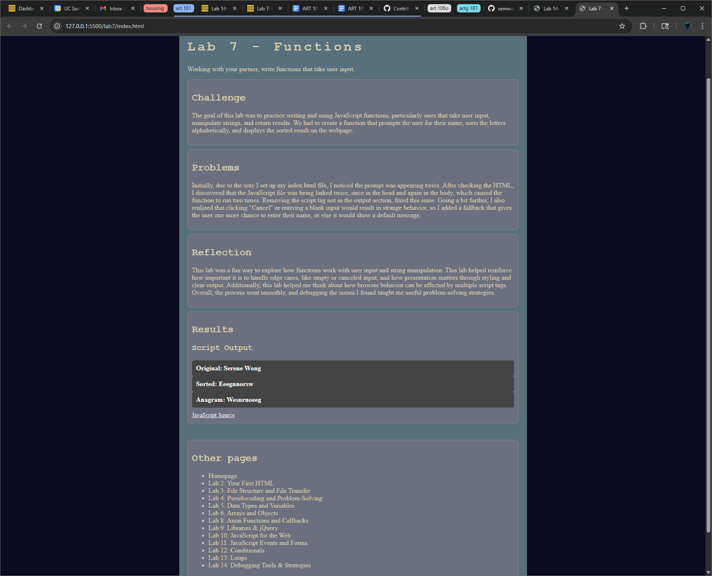

Lab 14: Debugging Tools & Strategies
Challenge
The challenge of this lab was to use debugging strategies to identify and fix issues in the past JavaScript labs. This lab emphasized the use of the JavaScript console, clear documentation, and code readability while reinforcing good programming habits.
Problems
Since most of my labs were already functioning properly, I focused on improving a previous lab where I had skipped the optional bonus tasks. In Lab 7, I originally implemented the core functionality but didn't go further due to time constraints. The main challenge was refactoring the code to support modular functions and make it more robust. I also had to write new helper functions (for shuffling and capitalization) and test how different inputs behaved. The JavaScript console and strategic `console.log()` statements helped verify that the transformations were working correctly step-by-step.
Reflection
This lab gave me a great opportunity to revisit and strengthen older work. Even though the original Lab 7 was working, revisiting it helped me practice better coding structure and reminded me how helpful small functions can be when building up larger behavior. I also gained a better understanding of how to structure input/output logic and handle edge cases, like blank input or casing inconsistencies. Overall, this debugging lab pushed me to clean up my code and elevate it beyond just “working.” I'm proud of the improvements I made.
Debugging
Debugging Log - Lab 7 Bonus Tasks
Originally, my Lab 7 implementation included the base functionality of prompting the user for their name and alphabetizing the characters. However, I did not include any of the optional bonus tasks. For this debugging lab, I revisited the lab and added several enhancements: the function now normalizes casing and removes whitespace before sorting, shuffles the characters to create a randomized anagram, capitalizes the output results, and passes the user input into the function as a parameter. These changes improve both the clarity and creativity of the lab, and make it more robust for different types of input. The shuffled name adds a fun twist, while the styling helps clearly show each result.
  Updated - Lab 7: Functions